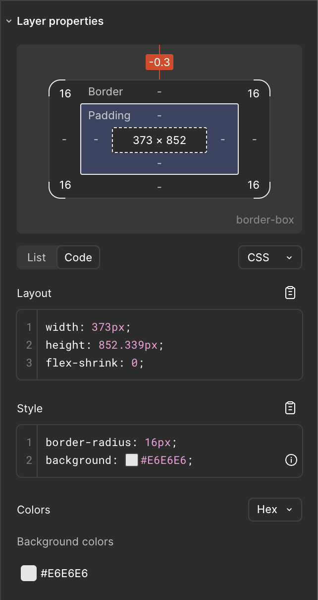
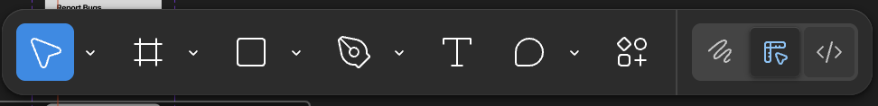

A Guide to Figma Handoff
This would be a walkthrough for translating design into code.
✓
The "DONE READY" Workflow
The "DONE READY" status in Figma signals the official handoff from design to engineering. It means a component, screen, or feature has been finalized and is ready for you to build. Your first step is to look for sections, frames, or pages marked with this status in the left-hand Layers panel.
Interactive Demo: The Inspector Panel
The Inspector panel is your primary tool for extracting design specifications. Instead of just reading about it, let's try it.
-
Select the Element:
Click the "Color Palette" button on the canvas to the right. -
View the Inspector Panel:
Notice how the Inspector panel image appears with the design specs. -
Translate to Code:
Use the values for layout, style, and colors to write your CSS.

❗️
Important Note. DO NOT RELY ON ONLY THE FIGMA CODE.

The generated code snippets are a good starting point but they are not a substitute for semantic and well structured code. They often messup and can be an issue sometimes. It is best to go into the dev mode and then use the mesuring tool it will look like a ruler 📏